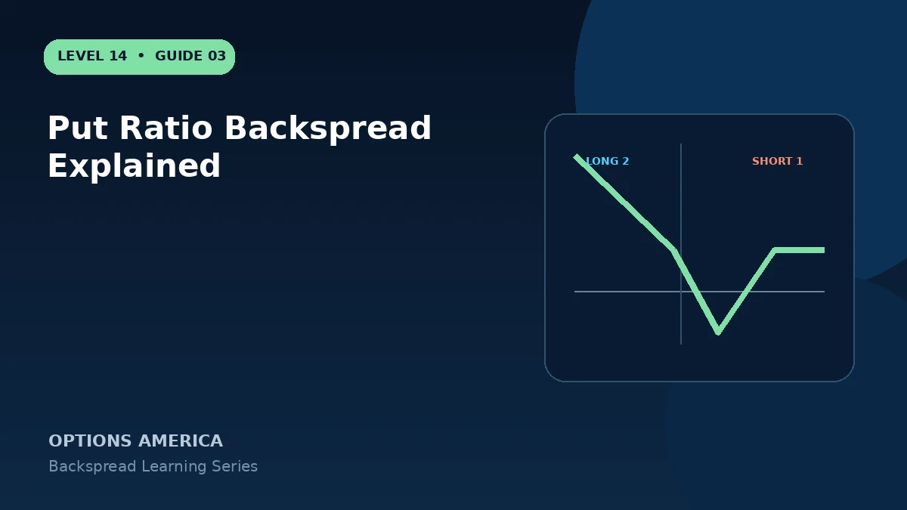

Learn how selling one higher-strike put and buying more lower-strike puts creates convex downside exposure.
Construction
Sell one higher-strike put and buy two lower-strike puts with the same expiration. The short put helps finance the additional downside options.
Above the short strike
All puts can expire worthless. The result is the opening credit retained or the debit lost, depending on how the spread was priced.
Between the strikes
The short higher-strike put gains intrinsic loss while the long puts remain OTM. This produces the loss valley and makes a modest decline potentially worse than no decline.
Below the long strike
Two long puts begin gaining against one short put, leaving net exposure similar to one additional long put. Profit grows as price falls, although the underlying cannot decline below zero.
A practical example
Sell one 100 put for $5.50 and buy two 95 puts for $2.60 each. The $0.30 credit can remain above $100, while a large decline below the lower breakeven creates the desired payoff.
This simplified example focuses on selected expiration outcomes; live prices and risks will differ. Live option prices also reflect the underlying price, time decay, rates, dividends, liquidity and transaction costs. Greeks are theoretical estimates, not guarantees.
Turn the payoff into a trading plan
Before entering put ratio backspread explained, write down the stock price, both strikes, expiration, contract ratio and total opening credit or debit. Then calculate the quiet-side result, maximum loss at the long-option strike and the far-move breakeven. These three checkpoints make the position easier to monitor and help prevent the attractive tail payoff from hiding the loss valley.
Test at least five scenarios: no move, a move to the short strike, a move to the long strike, a move to breakeven and a move well beyond breakeven. Repeat the exercise with implied volatility higher and lower and with less time remaining. The resulting range is more useful than a single payoff line because a live backspread can change substantially before expiration.
Finally, define the catalyst, maximum acceptable loss, review date and closing method in advance. Use one multi-leg order whenever possible, confirm every fill and recalculate the remaining position before changing any leg. Assignment, liquidity and transaction costs belong in the plan even when the expiration loss appears defined.
Frequently asked questions
Is downside profit unlimited?
No, because the underlying cannot fall below zero, but it can be substantial.
Can a small decline lose?
Yes, especially near the long-put strike.
Is assignment possible?
Yes. The short higher-strike put may be assigned.
Continue the Backspread Strategies cluster
Explore related guides: How to Build a Ratio Backspread · How to Choose Backspread Strikes · Implied Volatility and Vega in Backspreads. For a structured sequence, use the free Level 14 – Backspread course.
Options involve risk and are not suitable for every investor. This material is educational and is not investment, tax or legal advice. Greeks are theoretical estimates, and contract terms and broker requirements can vary.